Released on July 2, 2008
(Next Release on July 9, 2008)
Calculating Gasoline Product Supplied: Theory and Practice
Product supplied is defined as production plus imports minus stock change minus exports. Product supplied measures the volume of products moving through the primary petroleum supply system, which consists of refineries, importers, storage terminals (including gasoline blending terminals), pipelines, and gas processors, rather than consumption of petroleum products by end users. Still, product supplied remains a widely followed and useful measure of petroleum demand.
As often happens, what is simple in theory becomes more complicated in practice, and this is certainly true of finished motor gasoline product supplied. This edition of This Week in Petroleum will attempt to answer some of the most common questions received by EIA relating to gasoline product supplied.
Weekly and monthly EIA surveys of refineries and blending terminals capture data accounting for most U.S. gasoline production. If everything worked perfectly, U.S. refiners and blending terminals would report inputs of all available motor gasoline blending components ( RBOB, CBOB, GTAB, and “other”), fuel ethanol, and certain other components and the corresponding data on production of finished motor gasoline would be equal to the sum of the data on inputs. Product supplied for motor gasoline blending components and fuel ethanol would equal zero in this case.
In practice, product supplied calculated for motor gasoline blending components and fuel ethanol is nearly always greater than zero. We assume there is little to no demand for motor gasoline blending components and fuel ethanol outside of the primary petroleum supply system, so product supplied for motor gasoline blending components and fuel ethanol most likely reflects unreported blending activity. There are several possible reasons for gasoline blending activity to go unreported. These include incomplete coverage of blending terminals on EIA blender surveys and inconsistent product classification by reporting companies. For example, an importer could report imported barrels as motor gasoline blending components and a storage terminal operator might report the same barrels as finished motor gasoline due to a lack of coordination between accounting systems in different reporting companies. We are working with reporting companies and redesigning surveys to improve data quality and reduce such problems.
In theory, with perfect data collection and reporting, there would be no need to make any adjustments to the reported data. In practice, to accommodate the discrepancies that exist today, and the smaller ones that are likely to persist even after survey improvements are implemented, EIA takes unreported blending activity barrels (i.e. product supplied of motor gasoline blending components and fuel ethanol) and reports them as the finished motor gasoline “adjustment.” The finished motor gasoline adjustment subtracts supply of motor gasoline blending components and fuel ethanol and adds this supply to finished motor gasoline. The end result is a complete accounting of gasoline supply and product supplied for motor gasoline blending components and fuel ethanol equal to zero.
Table 1 uses 2007 data to illustrate the finished motor gasoline adjustment.
| Table 1. 2007 U.S. Supply and Disposition of Finished Motor Gasoline | ||
|---|---|---|
| (thousand barrels per day) | ||
| a. Production | 8,989 | |
| b. Refinery and Blender | 8,344 | |
| c. Refinery | 5,111 | |
| d. Blender | 3,232 | |
| e. Adjustment | 645 | |
| f. Blending Components | 569 | |
| g. Fuel Ethanol | 76 | |
| h. Imports | 406 | |
| i. Stock Change | -23 | |
| j. Exports | 127 | |
| k. Product Supplied | 9,290 | |
| Source: Energy Information Administration, Petroleum Supply Monthly, February 2008, Table 4. | ||
Refinery and blender production of finished motor gasoline and adjustments are reported as separate items in the Petroleum Supply Monthly (PSM) and Petroleum Supply Annual (PSA), but the value on line “a” of Table 1 must be calculated because it is not reported in the PSM or PSA. The fuel ethanol portion of the adjustment also is not reported as a separate number, but it can be calculated as the difference between adjustments for finished motor gasoline and motor gasoline blending components.
Finished motor gasoline production reported in the Weekly Petroleum Status Report (WPSR) is comparable to line “a” in Table 1. There is no separate reporting of weekly refinery and blender production and adjustments. This is important when considering weekly gasoline data because it means that all blending components activity is included in finished motor gasoline production data. This is why stock changes and imports used for calculating weekly product supplied for finished motor gasoline are limited to finished motor gasoline. Calculating gasoline product supplied using total gasoline (i.e. finished motor gasoline plus motor gasoline blending components) imports and stock changes leads to double counting of motor gasoline blending components. It is also worth noting that weekly gasoline adjustments are estimates typically based on the last available PSM data. This adds a degree of uncertainty to weekly gasoline production data that is not present in data reported in the PSM and PSA where the adjustment is calculated each month as shown below in Table 2.
| Table 2. 2007 U.S. Supply and Disposition of Motor Gasoline Blending Components and Fuel Ethanol | |||
| (thousand barrels per day) | |||
| Motor Gasoline Blending Components | Fuel Ethanol | ||
| a. Production | -- | 423 | |
| b. Imports | 752 | 28 | |
| c. Adjustments | -569 | -76 | |
| d. Stock Change | 22 | 5 | |
| e. Inputs (net) | 144 | 370 | |
| f. Refinery | -2,718 | 13 | |
| g. Blender | 2,862 | 357 | |
| h. Exports | 17 | 0 | |
| i. Product Supplied | 0 | 0 | |
| Source: Energy Information Administration, Petroleum Supply Monthly, February 2008 | |||
Adjustments in Table 2 are the same as those shown in Table 1 except the signs are reversed because the volumes are subtracted from supply of motor gasoline blending components and fuel ethanol and then added to supply of finished motor gasoline. Supplies of motor gasoline blending components from U.S. refiners are reported as negative net inputs (net inputs equal gross inputs minus gross production). Blender inputs of motor gasoline blending components include receipts from U.S. refineries and imports. The fuel ethanol column of the table shows that total fuel ethanol blended into U.S. gasoline includes inputs reported by refiners and blenders as well as the adjustment volume. Fuel ethanol blended into U.S. gasoline during 2007 was 447 thousand barrels per day (Table 2, line “e” minus line “c”).
The Monthly Energy Reviewshows total U.S. fuel ethanol blending including refinery and blender inputs as well as adjustments on Table 10.3.
In sum, product supplied remains a useful measure, even though its implementation requires the application of adjustments to span the gap between theory and practice. It is most useful, however, to those that understand the practical details of how the numbers are put together.
Gasoline Price Resumes Upward Climb to New Record High
After a one-week respite, the U.S. average retail price for regular gasoline increased to a new record high, moving up 1.6 cents to 409.5 cents per gallon. Prices rose throughout the country with the exception of the West Coast where the price dipped a bit. On the East Coast, the price went up a cent to 405.7 cents per gallon. In the Midwest, the increase of 3.5 cents was the largest of any region and pushed the price above $4 for the first time, to 403.1 cents per gallon. The Gulf Coast price remained the lowest of any region and was the only one under $4 at 392.8 cents per gallon, an increase of 0.9 cent. The Rocky Mountain price rose 3.2 cents to 403.4 cents per gallon. Although the price on the West Coast fell, the drop was only four-tenths of a cent to 445.6 cents per gallon. The average in California also declined somewhat, going down 1.2 cents to 457.3 cents per gallon.
The U.S. average retail diesel price dropped for the second consecutive week, falling three-tenths of a cent to 464.5 cents per gallon. On a regional basis, the changes were mixed, with small decreases in the East Coast, Midwest, and Rocky Mountain regions while the Gulf Coast and West Coast regions registered slight increases. The average price on the East Coast fell 0.7 cent to 470.4 cents per gallon. In the Midwest, the price slipped 0.3 cent to 457.1 cents per gallon and remained the lowest of any region. The average price in the Gulf Coast went up by two-tenths of a cent to 460.4 cents per gallon. The Rocky Mountains registered the largest decrease of any region, slipping 1.4 cents to 463.8 cents per gallon. On the West Coast, the average price increased for the first time since May 26. Nonetheless, the price was nearly unchanged, going up just 0.1 cent to 481.7 cents per gallon. In California, the average price also increased, by 0.6 cent, to 492.8 cents per gallon.
Propane Restocking Continues Strong
The seasonal build in propane inventories continued strong for the second consecutive week, adding 1.7 million barrels to primary inventories. The Nation’s supply of propane stood at an estimated 41.4 million barrels as of June 27, 2008. However, despite last week’s strong build, June inventories grew by 3.4 million barrels, the lowest rate for this month since 1985. Regional activity was mixed last week, with a loss in East Coast inventories of 0.1 million barrels but large gains reported in the Midwest and Gulf Coasts of 0.7 million barrels and 1.0 million barrels, respectively. During this same time, the combined Rocky Mountain/West Coast region remained relatively unchanged. Propylene non-fuel use inventories also remained unchanged last week but its share slipped, accounting for a 4.6 percent share of total propane/propylene inventories compared to the previous week’s share of 4.8 percent.
Text from the previous editions of “This Week In Petroleum” is now accessible through a link at the top right-hand corner of this page.
| Retail Prices (Cents Per Gallon) | |||||||
| 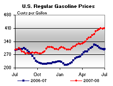 | 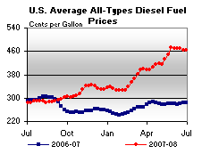 | ||||||
| Retail Data | Changes From | Retail Data | Changes From | ||||
| 06/30/08 | Week | Year | 06/30/08 | Week | Year | ||
| Gasoline | 409.5 | Diesel Fuel | 464.5 | ||||
| Spot Prices (Cents Per Gallon*) | |||||||||||||||||||||||||||||||||||
| 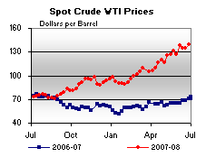 | 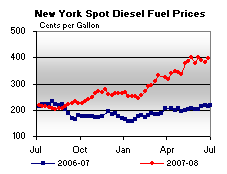 | ||||||||||||||||||||||||||||||||||
| 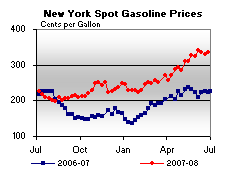 | 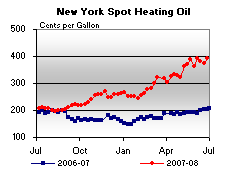 | ||||||||||||||||||||||||||||||||||
|
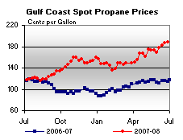 | ||||||||||||||||||||||||||||||||||
| *Note: Crude Oil WTI Price in Dollars per Barrel. | |||||||||||||||||||||||||||||||||||
| Stocks (Million Barrels) | |||||||
| 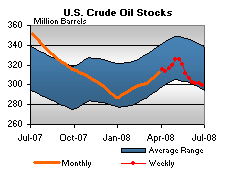 | 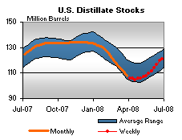 | ||||||
| 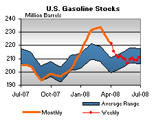 | 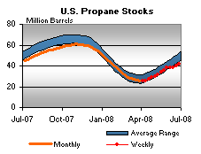 | ||||||
| Stocks Data | Changes From | Stocks Data | Changes From | ||||
| 06/27/08 | Week | Year | 06/27/08 | Week | Year | ||
| Crude Oil | 299.8 | Distillate | 120.7 | ||||
| Gasoline | 210.9 | Propane | 41.358 | ||||